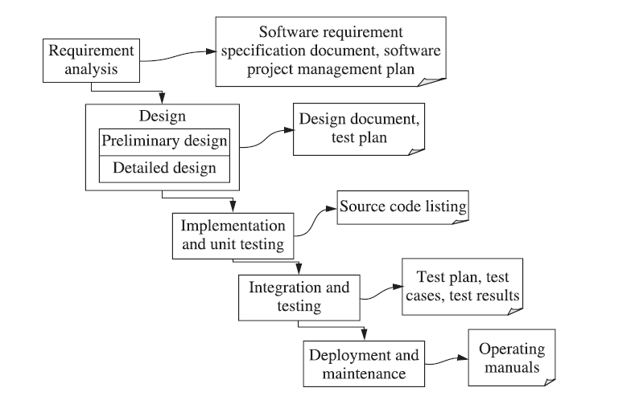
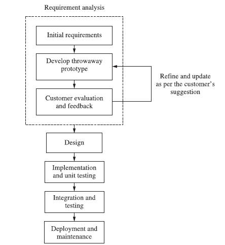
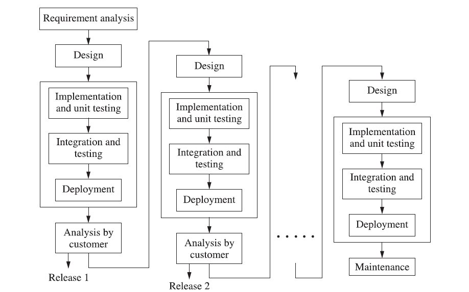
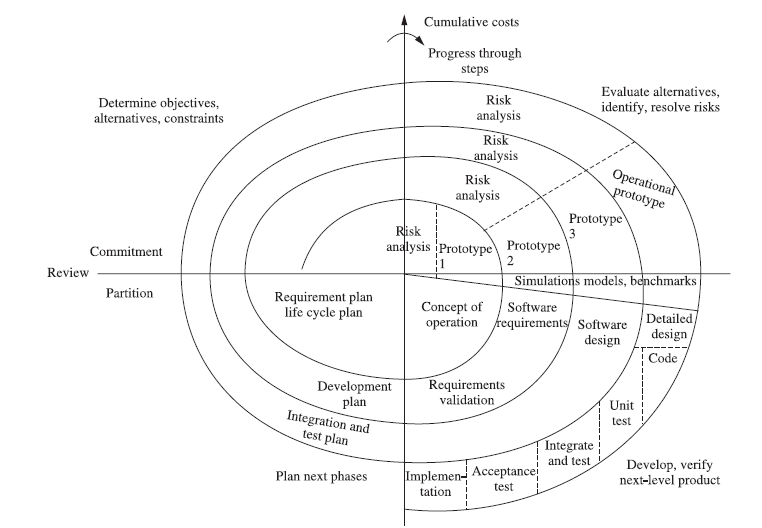
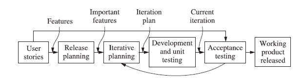
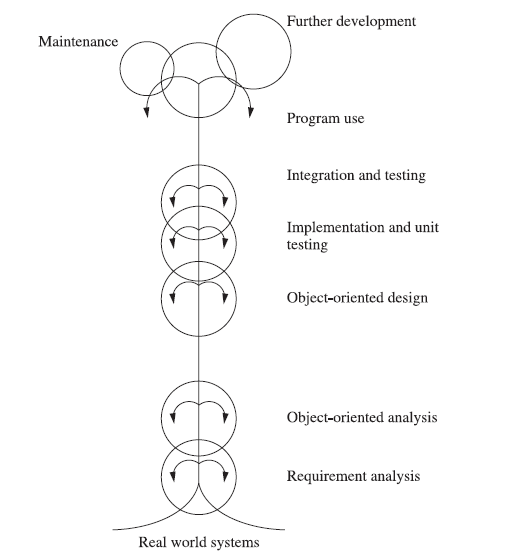
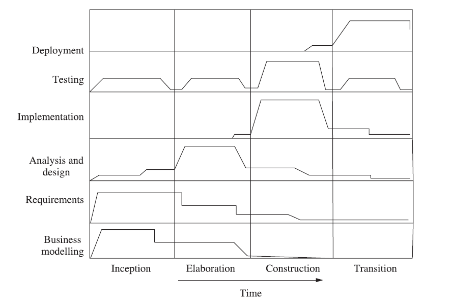
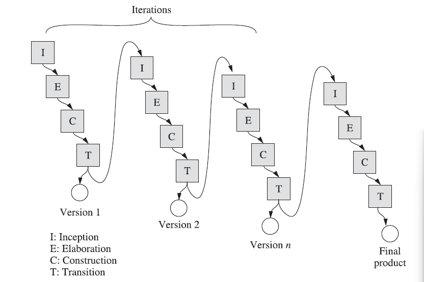

OOSE is a software design technique that is used in software design in Object OrientedP.
It consists of two terms – object oriented, and software engineering.
It is a collection of information that itself act as a singular entity. It allows the user to focus completely on the task rather than on the tools.
For example – C++, etc.
With the help of this, reusability as well as abstraction is possible.
The necessity of developing a maintaining a large-size, complex, and varied functionalities software system has caused us to look for new approaches of software design and development.
The conventional approaches like Waterfall Model may not be very useful due to non-availability of iterations, no provision of reuse, and difficulty in incorporating changing requirements.We may also build every software system from scratch that results into a costly software system, including very high maintenance cost.
An object oriented approach may address such issues, that’s why it has become very popular in designing,developing, and maintaining large size software systems. Object oriented approach’s modelling ability helps us to represent the real world situations and visualize them.
It is a profession dedicated to designing, implementing and modifying so that the software is more affordable, maintainable, faster to build, and high quality.
OR
The establishment and use of some engineering principles in order to obtain economically developed software that is reliable and works efficiently on real machines.
It is a combination of programs, documentation and operating manual.
A certain set of instructions that are written for a specific purpose. It may contain statements to enhance the readability of the program.
Documentation is created and used during development. It is used to explain the code, what it does, and why it has been coded in a certain way.
Explains to the customer how the software is to be used. It is delivered along with the software to the customer, at the time of release.
The use of use cases was introduced in Object Oriented Methodology.
Bathtub and software curve bs
A class represents a template for different objects and describes how these objects are structured internally. Objects of the same class have the same definition, both for the operations, and for the information structures.
OR
It is a collection of objects and it doesn’t take any space in memory. It is also called a blueprint, or a logical entity.
There are two types:
Pre-defined
Their logic is already written somewhere, and we can use it by importing. For example - Scanner, Console, etc. in Java
User-defined
The logic for these classes is defined by the programmer.
Fundamental entities used to model any system. Anything and everything can be an object. It contains data(attributes) and operations(behaviors).
The wrapping up of data and functions into a single unit. It is also known as information hiding concept.
Data is hidden from the outside world. The only way to get and modify the data is through operations that are meant to operate on that data. This helps in minimizing impact of changes in the program.
Deriving a new class from existing class in such a way that the new class can access all the features and properties of the existing class.
The existing class is called parent class, super class, base class. The new class is called child class, subclass, derived class.
The ability of an instruction,message,etc. to take many forms in an object oriented system is called polymorphism.
Sender of a stimulus (message) doesn’t need to know the receiver’s class. The receiver can belong to an arbitrary class.
Achieved through function overriding.
For eg - Superclass OutputDevice, with Subclasses Printer and Monitor. Both have a function called ShowData(). Both implement it differently, and a program calling obj.ShowData() doesn’t need to know whether obj is a Printer or Monitor. As long as it is an OutputDevice, the program can call the function. The behaviour of the function depends on which subclass is being used.
Hiding of complexity of data and operations. Irrelevant details are hidden and important details are amplified to the outside world.
The major phases of software development using the object oriented methodology are:
Object Oriented Analysis
In this stage, problem is formulated. User Requirements are identified and then a model is built, based upon real world objects.
The analysis produces models on how the desired system should function and how it must be developed.
The models do not include any implementation details, so that it can be understood by any non-technical application expert.
Object Oriented Design
Object Oriented Design includes two main stages.
System Design
In this stage, the complete architecture of the desired system is designed. The system is conceived as a set of interacting subsystems, that in turn are composed of a hierarchy of interacting objects, grouped into classes.
System Design is done according to both the system analysis model, and proposed system architecture.
Here, the emphasis is on the objects comprising the system, rather than the processes in the system.
Object Design
In this phase, a design model is developed based on both the models in the system analysis phase and the architecture designed in the system design phase.
All the classes required are identified. The designer decides where
The new classes are to be created from scratch.
Any existing classes can be used in their original form,or
New classes should be inherited from the existing classes.
The associations between the identified classes are established and the hierarchy of the classes are identified.
Besides this, the developer designs the internal details of the classes, and their associations, i.e, the data structure for each attribute, and the algorithm for the operations
Object Oriented Implementation + Testing
In this stage, the design model developed in the object design is translated into code in an appropriate programming language or software tool. The databases are created and the specific hardware requirements are ascertained. Once the code is in shape, it is tested using different techniques in order to identify and remove errors from the code.
Known as Object Oriented Analysis
Known as Object Modelling Technique (OMT)
Analysis Phase
Classes and inheritance relationships are extracted from problem statement.
Identifies states and events in classes identified by object model.
Depicts functionality of the system by creating data flow diagrams.
Sys Design - HLD is developed taking implementation env., including DBMS,etc. into account.
Object Design - Objects are defined in detail. Algorithms and operations defined.
Implementation
Object Oriented Design - Combines analysis, design and implementation. Iterative and incremental.
High Level Process
Lower level process.
OOSE methodology, 5 models:
Object oriented modelling - constructing visual models based on real world objects - Helps in understanding problems and developing documents and producing code. - Well understood requirements, robust designs, etc, etc.
Most popular methodologies - OOD (Booch), OMT (Rumbaugh), OOSE (Jacobson). All were combined into Unified Modelling Language (UML).
| Traditional | OO |
|---|---|
| The system is viewed as a collection of processes. | The system is viewed as a collection of objects. |
| Data flow diagrams, ER diagrams, data dictionary and structured charts are used to describe the system. | UML models including use case diagram, class diagram, sequence diagrams, component diagrams, etc. are used to describe the system. |
| Reusable source code may not be produced. | The aim is to produce reusable source code. |
| Data flow diagrams depicts the processes and attributes. | Classes are used to describe attributes and functions that operate on these attributes. |
| It follows a top-down approach for modelling the system. | It follows a bottom-up approach for modelling the system. |
| It is non-iterative. | It is highly iterative. |
Software Process Framework is a foundation of complete software engineering process. It includes all the umbrella activities.
A generic process framework consists of 5 activities:
Communication
Requirement Gathering, extensive communication with customer
Planning
We discuss the technical related tasks, work schedule, risks, and required resources
Modelling
It is about building representations of things in the real world.
In modelling, a product’s model is created in order to better understand requirements
Construction
In SE, construction is the application of set of procedures that are needed to assemble the product. In this activity, we generate the code and test the product in order to maintain better product.
Deployment
In this activity, a complete or a non-complete product or software, are presented to the customers to evaluate, and give feedback.
On the basis of their feedback, we modify the products to supply a better product.
Umbrella Activities are a set of steps or procedures that the SE team follows to maintain the progress, quality, change and risk of the overall development task.
SE is a collection of 4 related steps. These steps are presented or accessed in different approaches, in different software process models.
These steps of umbrella activities will evolve through the phases of the generic view of SE.
Software Project Tracking and Control
Before the actual development begins, a schedule for development of the software is created. Based on that schedule, the development will be done.
However, after certain period of time, it is required to review the progress of the development and to find out the actions which are in need to be taken to complete the development,testing etc.
The outcome of the review may require the software development to be rescheduled.
FTR (Formal Technical Review)
SE is done in clusters or modules. After completing each module, it is good practice to review the completed module and find out and remove errors so that the next module can be prevented.
SQA
The quality of software, such as UX, performance, load handling capacity, etc. should be tested, and make sure it matches predetermined milestones.
This reduces the task at the end of the development process. It should be conducted by dedicated teams so that the development can keep going on.
SCM (Software Config Mgmt)
It’s a set of activities designed to control change by identifying the work products that are likely to change and establish relationships among them.
Defining mechanisms for managing different versions of these work products.
Document Preparation and Production
All the project planning, and other activities, should be documented properly.
Reusability Management
This includes the packing up of each part of the software project. They can be connected, or any kind of support can be given to them, later to update or upgrade the software at user demand or time demand.
Measurement and Metrics
This will include all the measurement of every aspect of the software project.
Risk Management
It is a series of steps that helps a software team to manage and understand uncertainty. It’s a really good idea to identify, assess, estimate its impact, estimate probability of threats, and establish a plan for what to do in case the problem actually occurs.
Often combined in Object Oriented Analysis.

Advantages
Disadvantages

Advantages
Disadvantages
Waterfall stages in many cycles

Risk-based.

Agile methodology:

Difference btw Conventional and OOP SDLCs
| Conventional | OO | |
|---|---|---|
| Methodology | Functional, process driven | Object Driven |
| Requirement | DFD, ER, Data dictionary | Use-case approach |
| Analysis | DFD, ER, Data dictionary | Object identification and description, attribute and function determination |
| Design | Structure chart, flowchart, pseudocode | Class Diagram, Sequence Diagram, Object Diagram, UML |
| Implementation & Test | Implement process, functions | Implement objects and interactions among objects. |
| Documentation | Many documents at the end of each stage | Document may or may not be produced at the end of each stage |


Describes the process in terms of roles, activities, artifacts,disciplines and workflows.
Who(roles) does what (artifacts), when (workflows), and how(activities).
Roles perform activities to produce artifacts.
Roles - Manager, Analyst, Tester, Developer, Designer.
Activities - Review Requirement, Generate use case, Define class, Prepare test plan.
Artifacts - SRS, Use case model, Class model, Design document, Source code, Test plan, user manual.
Organized along time. It has 4 phases.
These 4 phases run iteratively. Each iteration produces a new version of the software.

Essential Activities:
Artifacts produced:
Essential Activities:
Artifacts produced:
Essential Activities:
Artifacts produced:-
Artifacts produced: